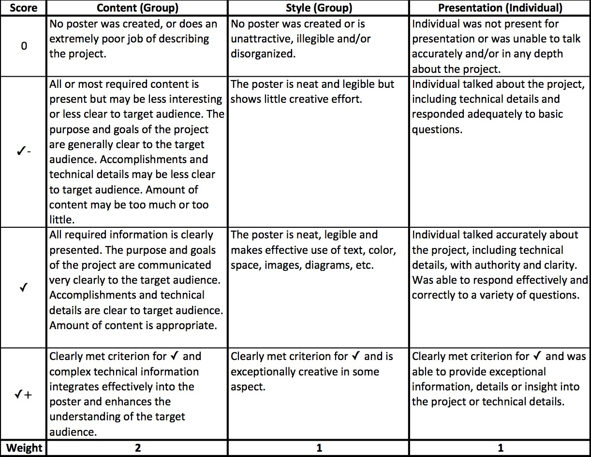

Computer Science 492
Senior Seminar
Dickinson College
Spring Semester 2019
Grant Braught
Project Poster Presentation
Introduction
Posters have become a common mechanism for presenting project results at professional meetings and conferences. This assignment provides experience developing a poster and presenting your work in a less formal small group or one-on-one setting. Students pursuing Departmental Honors will present their poster at the All College Dickinson Science Research Symposium (DCSRS). Additional information about the requirements for the DCSRS will be sent via e-mail when they become available. Students working on H/FOSS projects will prepare posters for presentation as part of a Service Learning/Community Based Learning (SL/CBL) poster session. H/FOSS project teams may make a single poster for the team, a poster for each sub-team or other creative options such as a central team poster with satellite sub-team posters. The professor will be happy to discuss ideas with you.
Poster Content and Audience
- For Honors projects posters should emphasize the research question being addressed, the methods used and the results obtained.
- For H/FOSS projects posters should emphasize the need addressed by the application, the user and developer communities, interactions with those communities, the interactions and contributions that you have made and what you have learned from the experience.
- The target audience for the posters should be other students and faculty who are unfamiliar with your project and also are not studying computer science. Note: This does not imply that you should not include any code, but you'll need to plan and contextualize carefully to make your points to this audience!
- Consider whether having a live demo as part of your presentation makes sense. If so, use a laptop beside the poster for the demo.
Poster Creation
- Posters should be a maximum of 36"h x 44"w.
- Posters titles should be legible from 20 feet. Other content should be clearly legible from 4-6 feet.
- Creating your poster as a single large PowerPoint slide is a relatively easy approach. Search for PowerPoint Poster Templates to find lots of predefined templates you can adapt to your needs. Or, express your own style by setting the slide size in PowerPoint to the size of the poster you want and laying everything out yourself!
- Use the posters hanging around the department as examples. Read a few of them and emulate the ones you feel do a good job. In addition, there are a number of good sites that give advice on producing poster for presentations:
Poster Printing
Have your poster printed at the Dickinson Print Center. There are forms for requesting print jobs available on their site. You must submit your poster to the print center at least 5 days prior to the poster session. Failure to do so may result in your poster not being ready for the session and will significantly impact your grade.
Your instructor will provide additional information regarding account numbers for paying for the poster printing.
Grading
I will assess posters using the rubric below. The standard score, and what you should generally expect to receive, is a ✓. Something exceptionally notable is required to move either up to a ✓+ or down to 0 or ✓-.

Note: Some language adapted from COMP492 Assignment A5: Poster form John MacCormick's earlier offering of this course.